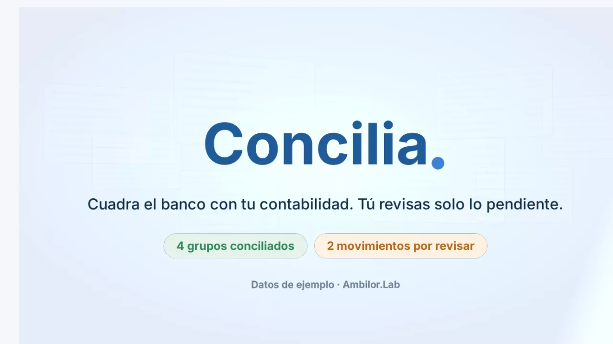

Concilia. · prototipo cinematográfico
Datos de ejemplo · 13 s · three.js en tiempo real

Cómo concilia Concilia (datos de ejemplo)
- Llegan la cartola del banco (6 movimientos) y el libro mayor (5 registros).
- Concilia busca la pareja de cada movimiento: el abono de $2.000.000 se agrupa con la Factura 1002 ($1.200.000) y su saldo ($800.000); la transferencia, el pago a proveedores y el depósito tienen su pareja 1:1.
- La comisión de mantención (−$12.990) y los intereses ($1.250) no tienen contraparte en el libro mayor: no se dan por conciliados, quedan por revisar o se explican con una regla.
- Resultado: 4 grupos conciliados y 2 movimientos por revisar, en la pantalla de Resultados.
Prototipo: la secuencia se dibuja en vivo con three.js (sin video). Con «reducir movimiento» se muestra el cierre quieto; sin 3D, la explicación en texto.